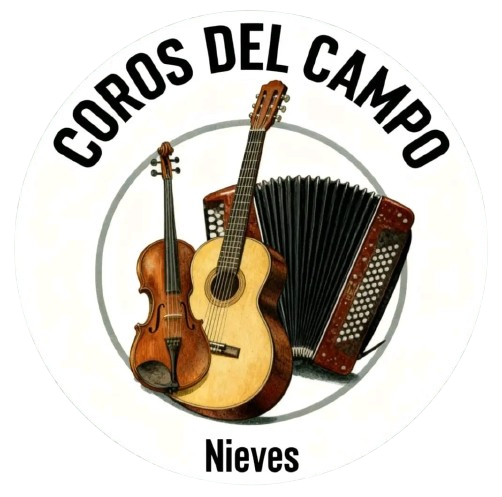

Nuestro espacio
Explora nuestras plataformas y disfruta de los coros de nuestra comunidad.
🌿 Nuestra música, nuestra tradición
Coros Del Campo es un espacio dedicado a compartir música y mantener vivas nuestras tradiciones.

TRADICIÓN · FE · MÚSICA
Un espacio para compartir nuestra música, nuestros cantos y nuestras tradiciones. ¡Que la música nos acompañe!
Explora nuestras plataformas y disfruta de los coros de nuestra comunidad.
Coros Del Campo es un espacio dedicado a compartir música y mantener vivas nuestras tradiciones.